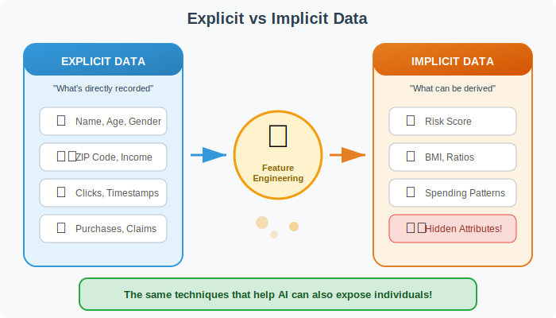
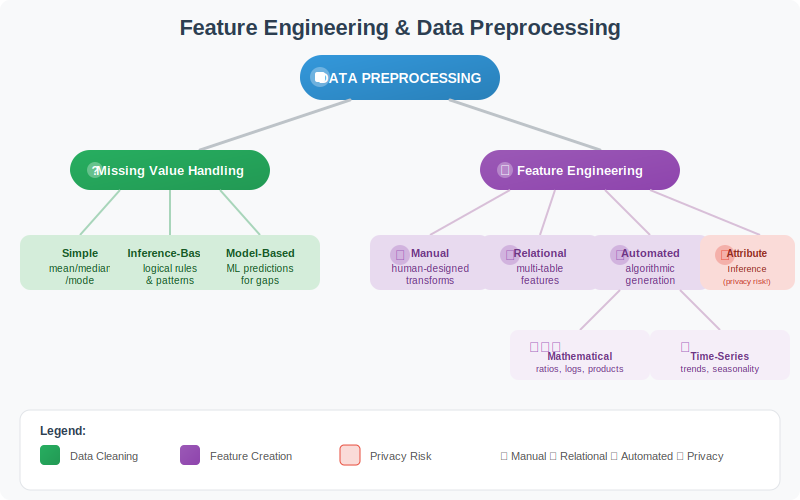
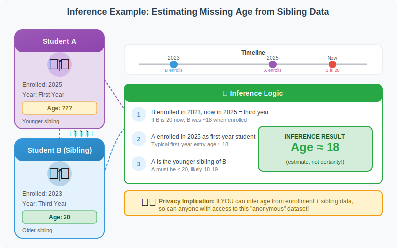
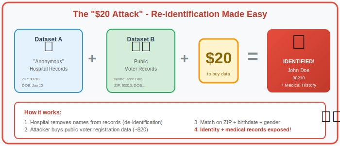
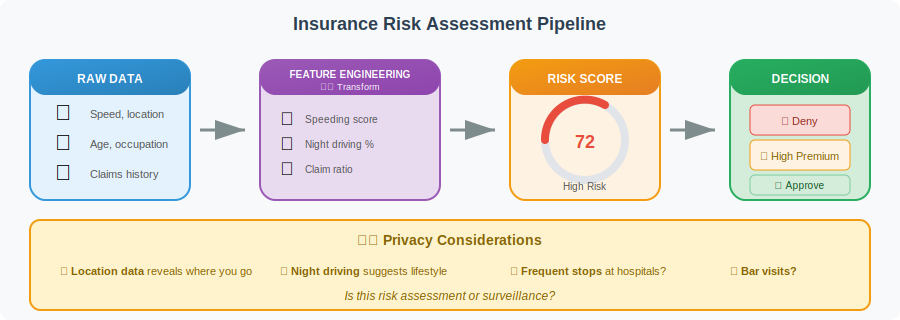

Learning Objectives
By the end of this session, students will be able to:
- Distinguish between explicit data (directly recorded) and implicit data (derived)
- Explain the types of feature engineering: manual, relational, and automated
- Understand how missing values can be inferred from other data
- Recognize privacy risks in "de-identified" datasets
- Connect feature engineering to real-world AI applications
- Evaluate the ethical implications of data inference
1. The Detective Story
Without being told directly, you've probably inferred:
- A child around 7 years old lives here
- The child recently had a birthday
- They're learning to ride a bike
- They probably like dinosaurs
This is Feature Engineering in Action!
You took explicit data (cake, candles, bike) and derived implicit information (age, interests, development stage).
AI systems do exactly the same thing with your data — often revealing far more than you intended to share.
The Privacy Question: If a detective can figure this out from a few clues, imagine what AI can infer from your entire digital footprint — purchases, searches, locations, clicks, and connections.
2. Explicit vs Implicit Data
Explicit Data: Information directly recorded in the dataset — what you consciously provide or what sensors directly measure.
Implicit Data: Information derived or inferred from explicit data — patterns, ratios, predictions, and hidden attributes.
Examples Across Domains
| Domain | Explicit Data (Given) | Implicit Data (Derived) |
|---|---|---|
| Education | Enrollment date, Birth date | Age at enrollment, Dropout risk score |
| Insurance | Claims filed, Annual income | Claims-per-income ratio, Risk category |
| Healthcare | Medications, Procedure codes | Likely conditions, Gender inference |
| Banking | Transactions, Credit limit | Utilization ratio, Spending patterns |
| Retail | Purchase history, Time of purchase | Life stage, Pregnancy prediction |
3. Feature Engineering Taxonomy
3.1 Manual Feature Engineering
Definition: Human-designed transformations that convert raw data into new, meaningful variables (features) to improve analysis or modeling.
| Transformation | Example | Why It's Useful |
|---|---|---|
| Ratios | BMI = weight ÷ height² | Single metric combines two measurements |
| Date Calculations | Age = today - birth_date | Extract meaningful time information |
| Binning/Grouping | Age Groups (0-20, 21-40, 41-60, 60+) | Convert continuous to categorical |
| Domain Formulas | Claim Ratio = claims ÷ premium paid | Business-specific risk indicator |
Key Point: Manual feature engineering requires domain knowledge — understanding what combinations of data make sense in your field.
3.2 Relational Feature Engineering
Definition: Creating new features using information from related records in other tables (multi-table data).
Example Scenarios:
- Student + Siblings table: Number of siblings, Average sibling age, Oldest sibling's graduation status
- Customer + Transactions table: Total purchases last month, Average order value, Days since last purchase
- Patient + Visits table: Visit frequency, Time since last visit, Number of different specialists seen
3.3 Automated Feature Engineering
Definition: Automatically generating many derived features by systematically combining and transforming variables using algorithms.
Types of Automated Feature Engineering:
| Type | What It Does | Example Features Created |
|---|---|---|
| Mathematical Synthesis | Tries products, ratios, logs, squares | x₁ × x₂, x₁ ÷ x₂, log(x₁), √x₂ |
| Time-Series Extraction | Extracts patterns from sequential data | Rolling mean, Trend, Peak frequency, Volatility |
Warning: Automated methods can create thousands of features. More isn't always better — many will be noise. Feature selection is crucial.
4. Filling the Gaps: Inference & Imputation
4.1 Inference-Based Imputation
Definition: Filling missing values using logical rules or statistical patterns derived from available data.
Simple Examples:
- Missing city? → Often inferred from ZIP code
- Missing age? → Estimated from enrollment year + typical entry age
- Missing income? → Approximated from occupation + education level
4.2 Model-Based Imputation
Definition: Using machine learning models to predict missing values based on patterns in complete records.
Think of it as "teaching the computer to guess intelligently" — if people with similar characteristics tend to have similar values, the model can predict what's missing.
4.3 The Student-Sibling Age Example
This flagship example demonstrates how inference works in practice:
The Inference Logic:
Step 1: Student B enrolled in 2023 and is now 20 (in 2025) → B was ~18 when enrolled
Step 2: Student A enrolled in 2025 as a first-year student → Likely ~18
Step 3: A is the younger sibling of B (who is 20) → A must be ≤20, probably 18-19
Conclusion: Student A is probably around 18 years old
What This Example Demonstrates:
- Inference-based imputation: Using logical rules to fill gaps
- Relational feature engineering: Using sibling data
- Attribute inference: Deriving age that wasn't recorded
- Uncertainty: This is an estimate, not certainty!
Important: This inference gives a probability, not a guarantee. Student A might be 25 and returning to school! Always treat inferred values with appropriate uncertainty.
5. The Privacy Reckoning: When Data Reveals Too Much
The Uncomfortable Question: If feature engineering can fill in missing data, what can it reveal about YOU from "anonymous" datasets?
5.1 Quasi-identifiers: The Silent Identifiers
Quasi-identifiers: Attributes that aren't direct identifiers (like name or SSN) but can help identify or profile individuals when combined.
| Combination | Identification Power |
|---|---|
| ZIP code + Birthdate + Gender | 87% of Americans uniquely identified! |
| Detailed location + Timestamps | Can reveal home address, workplace, relationships |
| Purchase patterns over time | Can reveal life events (pregnancy, illness, divorce) |
| Movie ratings + Timestamps | Can be matched to public reviews to identify |
5.2 How "Anonymous" Data Fails

| Available Data | What Can Be Inferred |
|---|---|
| Medical procedures | Gender, age range, chronic conditions |
| ZIP code + Property values | Income bracket, socioeconomic status |
| Purchase history | Age, gender, life stage, pregnancy |
| Movie/Music ratings | Political views, religious beliefs, preferences |
| Location data | Home address, workplace, relationships, habits |
| Search queries | Health concerns, financial situation, secrets |
5.3 Famous Re-identification Disasters
5.4 The $20 Attack
The "$20 Attack": With just ~$20, anyone can buy auxiliary data (voter records, social media profiles, public databases) that makes "anonymous" data identifiable.
The Uncomfortable Truth: Most "de-identified" data can be re-identified by someone motivated enough. The question isn't "Is this data anonymous?" but "How much effort would it take to identify someone?"
De-identification vs Anonymization
- De-identification: Removing obvious identifiers (name, SSN). Still potentially linkable.
- Anonymization: Mathematically impossible to re-identify. Much harder to achieve.
De-identification is NOT the same as anonymization!
The Real Story Behind the $20 Attack
Yes, this is a real and well-documented privacy vulnerability! This diagram illustrates the famous re-identification attack demonstrated by Dr. Latanya Sweeney in the late 1990s.
What Happened
Dr. Sweeney, then a graduate student at MIT, showed that supposedly "anonymized" health records could be easily re-identified. In a famous demonstration, she purchased voter registration data for Cambridge, Massachusetts for about $20 and matched it against anonymized hospital discharge records. She was able to identify the medical records of then-Governor William Weld using just three data points: ZIP code, birthdate, and gender.
Is It Still Possible?
Yes, in principle. Her research found that approximately 87% of the U.S. population can be uniquely identified using just those three quasi-identifiers. Public records like voter registrations, property records, and other datasets are still widely available—sometimes free, sometimes for small fees depending on the state.
What's Changed Since Then?
- HIPAA Safe Harbor rules now require removing more identifying information (including full ZIP codes in some cases)
- Many states have restricted access to voter data
- Organizations are more aware of "quasi-identifier" risks
But the core lesson remains: simply removing names from data doesn't make it truly anonymous. This is why modern data privacy focuses on techniques like k-anonymity, differential privacy, and synthetic data.
So yes—this attack concept is very real and foundational to the field of data privacy.
6. Real-World Applications (With Privacy Considerations)
6.1 Insurance Risk Scoring — Helpful or Discriminatory?
| Explicit Data | Engineered Feature | Used For |
|---|---|---|
| Age, Gender, ZIP | Life expectancy cohort | Premium calculation |
| Occupation | Risk index (desk job vs construction) | Eligibility decisions |
| GPS speed data | Speeding score | Driving risk assessment |
| Time of driving | Night driving percentage | Lifestyle risk indicator |
Privacy Warning: Insurance telematics knows where you go, when, and how you drive. Your "driving score" reveals your lifestyle: late-night trips, frequent hospital visits, time at bars. Is this risk assessment or surveillance?
6.2 Healthcare — Life-Saving or Privacy-Invading?
| Explicit Data | Engineered Feature | Application |
|---|---|---|
| Lab results over time | Trend indicators | Disease progression prediction |
| Visit frequency | Utilization index | Cost prediction |
| Medications prescribed | Chronic disease risk score | Care planning |
Privacy Warning: Healthcare feature engineering can predict conditions you don't know you have yet. What happens when your insurance company or employer infers your future health from your current data?
6.3 Banking & Finance — Fraud Prevention vs Surveillance?
| Explicit Data | Engineered Feature | Application |
|---|---|---|
| Transactions | Spending pattern clusters | Fraud detection |
| Balance + Loans | Debt-to-income ratio | Credit scoring |
| Payment history | On-time payment score | Loan approval |
Privacy Warning: Your transaction history reveals your religion (halal groceries), politics (donations), health (pharmacy visits), and relationships (who you send money to). Banks know more about you than your family does.
6.4 Ethical Guidelines for Practitioners
The Practitioner's Checklist
- Necessity Test: Do I really need to derive this feature, or am I just curious?
- Proportionality Test: Is the privacy cost worth the analytical benefit?
- Reversibility Test: Could this derived feature be used to identify individuals?
- Consent Test: Would users be surprised to learn this is being derived?
- Harm Test: Could this feature be used to discriminate or harm someone?
Discussion Questions
- Should insurance companies be allowed to use telematics data for pricing?
- Should healthcare AI be able to predict diseases you haven't been diagnosed with?
- Who owns the insights derived from YOUR data?
7. Tools Summary (What They Do, Not How to Code Them)
| Category | Tool | What It Does | When to Use |
|---|---|---|---|
| Manual FE | pandas | Create custom calculations: ratios, date differences, groupings | When you know exactly what features you need |
| Manual FE | feature-engine | Ready-made transformations: binning, encoding, scaling | When you want pre-built building blocks |
| Relational FE | Featuretools | Automatically creates features from linked tables | When data spans multiple related tables |
| Mathematical FE | Autofeat | Automatically tries combinations: multiply, divide, log | When exploring which math transforms help |
| Time-Series FE | tsfresh | Extracts patterns from sequential data | When analyzing sensor data, stocks, events over time |
| Time-Series FE | kats | Facebook's toolkit for time patterns | When doing advanced time-series analysis |
| Imputation | sklearn | Fill missing values with simple statistics | When missing data is random |
| Imputation | fancyimpute | Smart missing value prediction using patterns | When missing data has structure |
8. Practice Datasets
| Dataset | Source | What You Can Learn |
|---|---|---|
| UCI Adult (Census Income) | UCI ML Repository | Income prediction from demographic features — practice creating age groups, education levels, work-status indicators |
| Bank Marketing | UCI ML Repository | Customer conversion prediction — practice contact features, economic indicators, campaign engagement metrics |
| NYC Taxi Trips | NYC TLC | Trip analysis — practice time features (rush hour, weekday), location clustering, fare patterns |
| MIMIC-IV (Healthcare) | PhysioNet (requires registration) | Clinical risk scoring — practice lab value trends, visit frequency, medication patterns |
Privacy Exercise: As you practice with these datasets, ask yourself: "What could I infer about a person from this data that wasn't explicitly collected?" This awareness is the first step toward responsible data science.
Summary
Key Takeaways
Glossary of Key Terms
| English | Arabic | Definition |
|---|---|---|
| Feature Engineering | هندسة الخصائص | Creating new variables from raw data to improve analysis |
| Imputation | الاستبدال/التعويض | Filling in missing values using logic or models |
| Explicit Data | بيانات صريحة | Information directly recorded in the dataset |
| Implicit Data | بيانات ضمنية | Information derived or inferred from explicit data |
| Quasi-identifier | شبه معرّف | Attributes that can help identify individuals when combined |
| Attribute Inference | استنتاج السمات | Deriving sensitive information from other attributes |
| De-identification | إزالة التعريف | Removing direct identifiers (names, IDs) from data |
| Re-identification | إعادة التعريف | Recovering identity from "anonymous" data |
| Risk Scoring | تقييم المخاطر | Computing numeric score for likelihood of an event |
Looking Back: Connection to Session 1
In Session 1, we learned how data is processed across many machines — potentially in different countries, managed by different companies. Now we see the privacy implications: when your data is spread across systems you don't control, feature engineering can reveal far more about you than you ever intended to share.